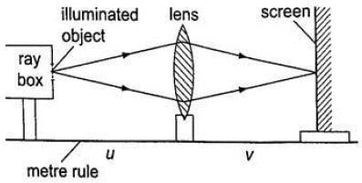

Let the object distance be represented by ‘u’ ,the image distance by ‘v’ andthe focal length by ‘ f ’, then the general formula relating the three quantities is given by; 1/f = 1/u + 1/v – this is the lens formula. Examples
An object is placed 12 cm from a converging lens of focal length 18 cm. Find the position of the image. Solution Since it is a converging lens f = +18 cm (real-is-positive and virtual-is-negative rule) The object is real therefore u = +12 cm, substituting in the lens formula, then 1/f = 1/u + 1/v or 1/v = 1/f – 1/u = 1/18 – 1/12 = - 1/36 Hence v = - 36 then the image is virtual, erect and same size as the object.
The focal length of a converging lens is found to be 10 cm. How far should the lens be placed from an illuminated object to obtain an image which is magnified five times on the screen? Solution f = + 10 cm; m = v/u = 5 hence v = 5u Using the lens formula 1/f = 1/u + 1/v → 1/10 = 1/u + 1/5u ( replacing v with 5u ) 1/10 = 6/5u, hence 5u = 60 giving u = 12 cm ( the lens should be placed 12 cm from the illuminated object)
The lens of a slide projector focuses on an image of height 1.5m on a screen placed 9.0 m from the projector. If the height of the picture on the slide was 6.5 cm, determine,
Distance from the slide (picture) to the lens
Focal length of the lens
Solution a) Magnification = height of the image/height of the object = v/u = 150/6.5 = 900/uu = 39 cm (distance from slide to the lens). m = 23.09 b) 1/f = 1/u + 1/v = 1/39 + 1/90 = 0.02564 + 0.00111 1/f = 0.02675 ( reciprocal tables ) f = 37.4 cm.
Determining Focal Lengths
Determining Focal Length of a Converging Lens
Experiment : To Determine the Focal Length of a Converging Lens Using the Lens Formula.
Procedure
Set up the apparatus as shown below 
Place the object at reasonable length from the screen until a real image is formed on the screen. Move the lens along the metre rule until a sharply focused image is obtained.
By changing the position of the object obtain several pairs of value of u and v and record your results as shown.
u
v
uv
uv/u+v
Discussion
The value uv/u + v is the focal length of the lens and the different sets of values give the average value of ‘f’.
Alternatively the value ‘f’ maybe obtained by plotting a graph of 1/v against 1/u.
When plotted the following graph is obtained.
Since 1/f = 1/u + 1/v , at the y-intercept 1/u = 0 , so that 1/f = 1/v or f = v.
The focal length may therefore be obtained by reading off the y-intercept and finding the reciprocal. Similarly at the x-intercept, 1/v = 0 , therefore 1/f = 1/u or f = u hence the focal length can also be obtained by reading off the x-intercept and finding the reciprocal.